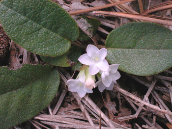

Previous || Next || Return to Mystery Plants || USC Herbarium
This Week's Mystery Plant | Dr. John B. Nelson Curator, USC Herbarium |
|
Gardeners will tell you that the soil has a lot to do with what will grow in it. One aspect of understanding the nature of soils involves their chemistry, specifically whether they are naturally acidic, or alternatively circumneutral, or "basic." The more acidic a given soil is, the more likely it is that many plants will have a hard time absorbing nutrients from it. That is why, for the garden, acidic soils are frequently improved by the addition of substances like lime. Some plants, though, prefer acidic soils. A good example would be most members of the rhododendron, or "heath" family. This week's mystery plant is a member of this large, well-known plant group. It is a low, evergreen plant, technically a small shrub, which creeps along the ground. It prefers acidic soils, especially in sandy or rocky places. This species is very widely distributed across eastern North America, from Labrador to central Canada, and then as far south as Florida. In South Carolina it is most common in the sand hills of the fall-line counties, and also in the mountains, but is no doubt present in all the piedmont counties as well. Around the midlands, it usually begins blooming in March (we have one very early blooming specimen at the Herbarium from early February, 1938), and it's a cheerful reminder that winter is over. Farther north, it blooms somewhat later, well into May. The pink flowers are magnificent, and have one of the most exquisite fragrances in nature. This species is probably not as common as it once was, due to habitat destruction: it can't stand much disturbance wherever it grows. (So don't pick any.) |
 Photo by Linda Lee |